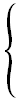

Вариант № |
x = |
| 1 |

(a+2)/b , если a > b
21 , a = b
(a*b)/4 , если a < b
|
| 2 |
a/b+2 , если a > b
4 , a = b
a*a/(b-3) , если a < b
|
| 3 |
48 , a = b
32*a/(b+8) , если a > b
(a-1)/(b*3) , если a < b
|
| 4 |
11 , a = b
a*a/b , если a < b
b*a/11 , если a > b
|
| 5 |
b*22/a-1 , если a > b
8 , a = b
128-a , если a < b
|
| 6 |
-15 , a = b
(a-b)/(a+3) , если a > b
(a*a+1)/3 , если a < b
|
| 7 |
(a+12)/5 , если a < b
a/b-21 , если a > b
210 , a = b
|
| 8 |
b/a+1 , если a > b
0 , a = b
b*(b-1) , если a < b
|
| 9 |
(a-5)/a , если a > b
5 , a = b
(b+5)/2 , если a < b
|
| 10 |
0 , a = b
b/a+1 , если a > b
b*(b-1) , если a < b
|
| 11 |
(b+a)/(a-1) , если a > b
23 , a = b
b*b/8 , если a < b
|
| 12 |
(2+b)/a , если a > b
b/8+4 , если a < b
2 , a = b
|
| 13 |
b/a+86 , если a > b
16 , a = b
(a-32)/b , если a < b
|
| 14 |
(a+8)/b , если a > b
(a+3)*b , если a = b
127 , a < b
|
| 15 |
(a+86)*6 , если a > b
-16 , a = b
(128-a)/b , если a < b
|
| 16 |
100+a/b , если a < b
32 , a > b
a*a/b , если a = b
|
| 17 |
a*b-1 , если a > b
-1 , a = b
a/b+2 , если a < b
|
| 18 |
(a+6)/b , если a > b
6 , a = b
(12+a)/b , если a < b
|
| 19 |
a/(b-4) , если a = b
64 , a > b
a*b+8 , если a < b
|
| 20 |
b/a+126 , если a > b
-44 , a = b
(12+a)/12 , если a < b
|
| 21 |
-127 , a > b
a/b-2 , если a = b
a/b+11 , если a < b
|
| 22 |
(a-b)/b , если a > b
256 , a = b
a/b+5 , если a < b
|
| 23 |
a/b-1 , если a < b
-300 , a = b
(a-10)/b , если a > b
|
| 24 |
64/b-a , если a < b
88 , a = b
(a-99)/b , если a > b
|
| 25 |
a/b-14 , если a > b
33 , a = b
(b+a)/b , если a < b
|
| 26 |
b*a-20 , если a < b
20 , a = b
9*a/b , если a > b
|
| 27 |
(a-b)/b , если a > b
-55 , a = b
a/b+53 , если a < b
|
| 28 |
-15/b+a , если a > b
78 , a = b
39*(a-b) , если a < b
|
| 29 |
14*a+6/b , если a < b
-90 , a > b
(12+a)*4 , если a = b
|
| 30 |
a*20/b-4 , если a = b
112 , a < b
89*b/a , если a > b
|
| 31 |
600 , a = b
7*a/(b+4) , если a > b
a*b/3 , если a < b
|
| 32 |
b/4+b-2 , если a > b
23 , a = b
32/a+b , если a < b
|
| 33 |
a*89/(b+3) , если a > b
-6 , a = b
a/6+1 , если a < b
|
| 34 |
(2+a)/(b-1) , если a = b
-100 , a > b
b*b/2 , если a < b
|
| 35 |
7*b-54 , если a > b
89 , a = b
25/a+b , если a < b
|
| 36 |
(b-33)/(8*a) , если a = b
27 , a < b
122/b+1 , если a > b
|